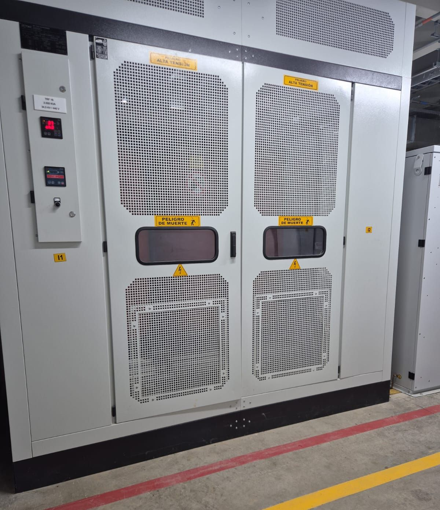
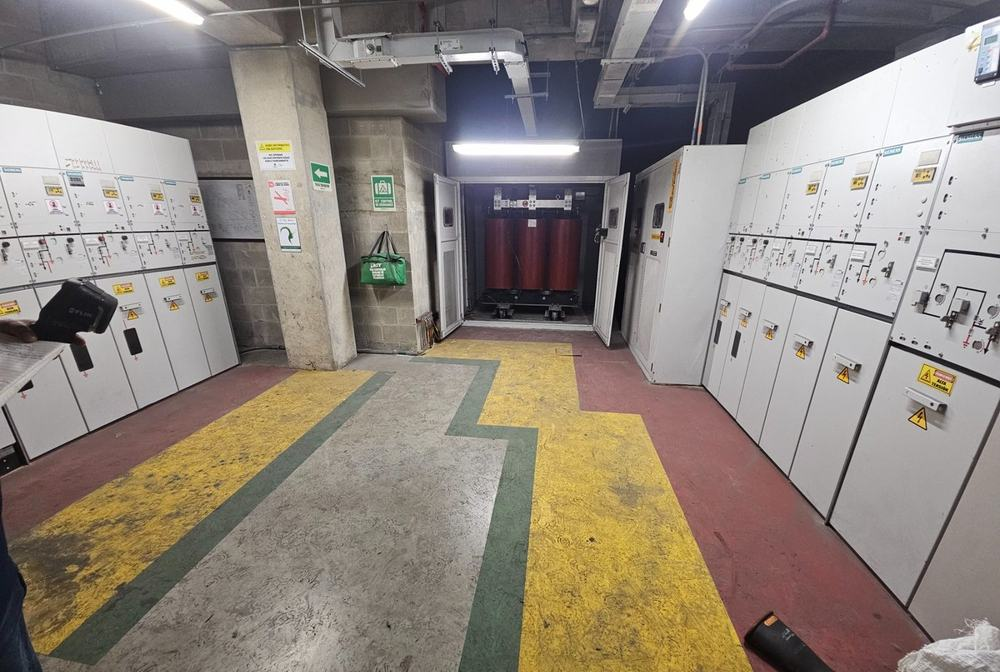
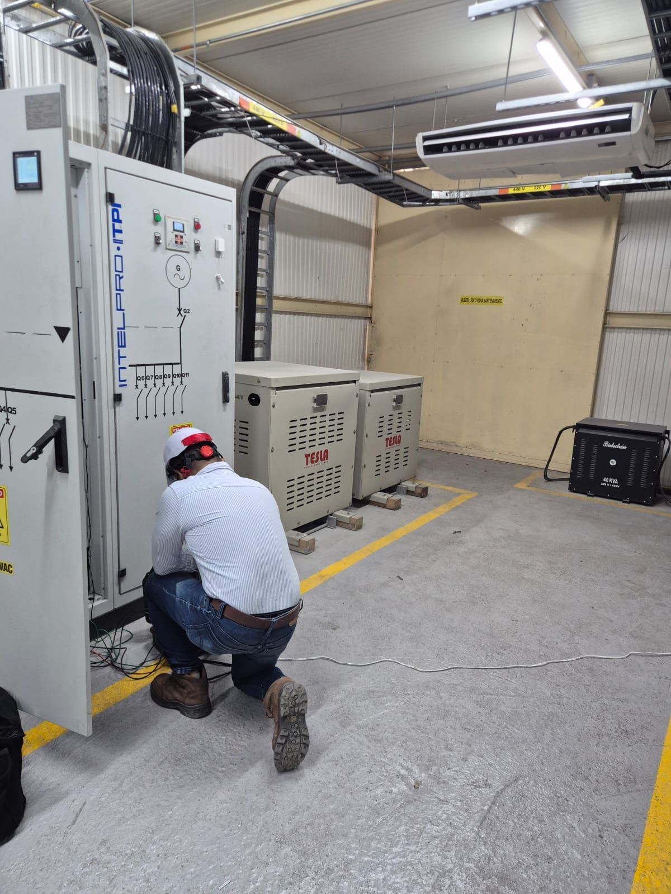

Mantenimiento de Subestaciones Eléctricas
Mantenimiento preventivo y correctivo para subestaciones de media tensión en cuartos técnicos, sótanos y áreas comunes de industrias, edificios y centros comerciales, con inspección documentada conforme a los lineamientos de RETIE. Cobertura en Barranquilla, Atlántico y la Región Caribe.





Riesgo eléctrico que no se ve a simple vista
Una subestación sin mantenimiento acumula riesgos silenciosos: conexiones flojas que generan puntos calientes, protecciones desajustadas y desgaste que no es visible hasta que ya provocó una falla. Nuestro mantenimiento identifica esos riesgos y contribuye a reducir la probabilidad de que deriven en una parada no programada.
- Falla eléctrica no detectada a tiempo en subestaciones de media tensión.
- Puntos calientes en conexiones que pueden derivar en una falla mayor.
- Protecciones (settings) fuera de ajuste.
- Falta de evidencia técnica documentada ante aseguradoras, auditorías o el operador de red.
Equipos que atendemos
Trabajamos subestaciones de media tensión en cuartos técnicos, sótanos, cárcamos y áreas comunes de industrias, edificios y centros comerciales.
Celdas y protecciones
Celdas de media tensión, interruptores, seccionadores y tableros de protección y control.
Transformadores asociados
Transformadores de potencia dentro de la subestación (pruebas específicas en nuestra página de mantenimiento de transformadores).
Puesta a tierra
Sistemas de puesta a tierra y pararrayos asociados a la subestación.
Cómo trabajamos
Un protocolo técnico documentado, de la inspección inicial al informe final.
Inspección y diagnóstico
Checklist técnico, revisión visual y termografía infrarroja, realizados con el equipo en operación bajo condiciones de seguridad apropiadas.
Mantenimiento en sitio
Limpieza, ajuste de conexiones y verificación de protecciones, con el equipo desenergizado bajo bloqueo y etiquetado (LOTO).
Pruebas de verificación
Confirmación de parámetros eléctricos tras la intervención.
Informe técnico
Hallazgos, estado del equipo y plan de acción recomendado, conforme a la normativa RETIE vigente.
Trabajo de campo

Por qué programar este mantenimiento
Menos paradas no programadas
Detectar a tiempo un punto caliente o una conexión floja contribuye a reducir el riesgo de una parada no programada.
Mayor vida útil del equipo
Un mantenimiento programado extiende la vida útil de equipos de alto valor como celdas y transformadores.
Evidencia técnica documentada
El informe técnico sirve como soporte ante aseguradoras, auditorías internas o el operador de red.
Gasto planeado, no emergencia
Un mantenimiento programado es más económico y predecible que una reparación de emergencia.
Resolvemos tus dudas
¿Cada cuánto se debe hacer mantenimiento a una subestación eléctrica?
La frecuencia de mantenimiento depende de la criticidad de la instalación, las condiciones ambientales, el historial de fallas, el estado de los equipos y las recomendaciones del fabricante. Evaluamos estos factores para definir un programa de intervención adecuado.
¿Qué pasa si nunca le he hecho mantenimiento a mi subestación?
Es momento de programar una inspección inicial. Muchas fallas graves se originan en conexiones flojas o puntos calientes que no generan síntomas visibles hasta que ya es tarde — la termografía infrarroja permite detectarlos antes de que deriven en una falla mayor.
¿El mantenimiento requiere apagar toda la instalación?
Sí, las intervenciones directas sobre la subestación se realizan con el equipo desenergizado y bajo bloqueo y etiquetado (LOTO), por seguridad. Coordinamos contigo la ventana de tiempo que menos afecte tu operación.
¿Entregan un informe que pueda presentar a mi aseguradora o al operador de red?
Sí. Cada intervención incluye un informe técnico con los hallazgos, el estado del equipo y las recomendaciones, elaborado conforme a los lineamientos de RETIE. Este informe es un soporte documental de mantenimiento y no constituye una certificación formal de conformidad RETIE, la cual debe emitirla un organismo de certificación o inspección acreditado.
¿Atienden subestaciones fuera de Barranquilla?
Sí, cubrimos Barranquilla, el departamento del Atlántico y la región Caribe colombiana.
También puede interesarte
Mantenimiento de Transformadores
Pruebas eléctricas y diagnóstico de transformadores secos y en aceite.
Ver detalle →Pruebas Eléctricas Especializadas
Diagnóstico eléctrico, análisis de aceite dieléctrico y termografía industrial.
Ver detalle →Mantenimiento Eléctrico General
Vista completa de todos nuestros servicios de mantenimiento eléctrico.
Ver detalle →¿Necesitas mantenimiento para tu subestación?
Cuéntanos la condición de tu instalación y te orientamos sin compromiso.